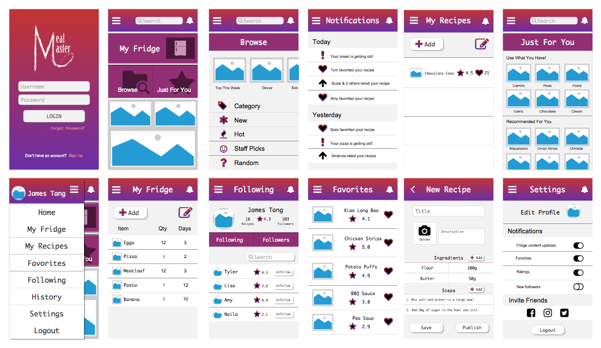

Prototyping
Initially, paper was used for design sketches. Afterwards, the finalized paper sketches were used to create a polished version of the app on Axure. Throughout the design process, user testing was conducted in order to understand the strengths and weaknesses of the design which then helped in creating a more effective, user-friendly design.
